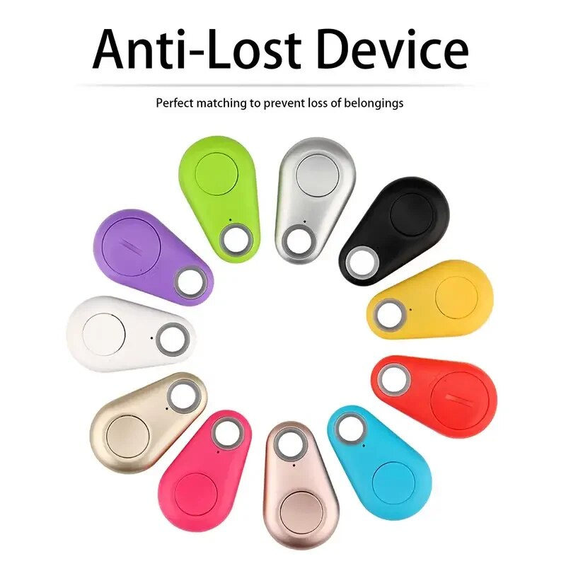
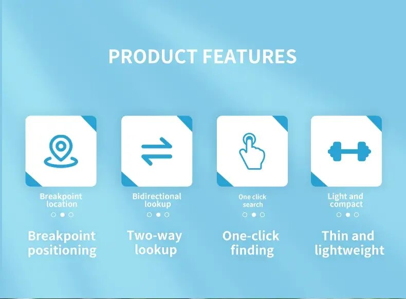
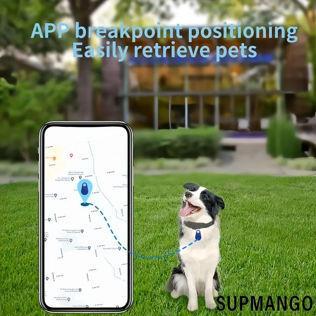
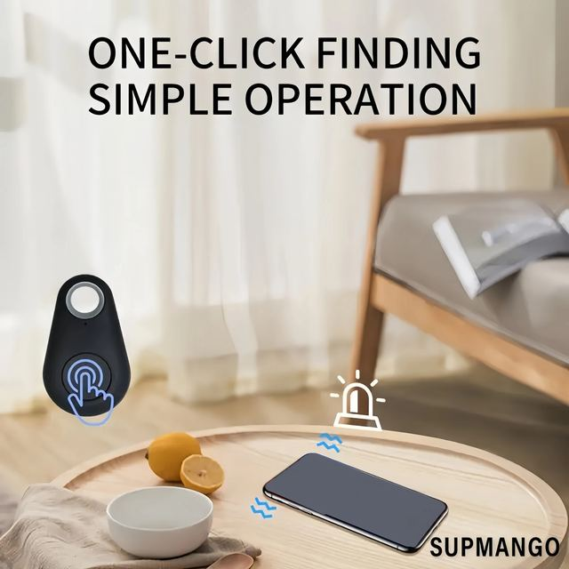
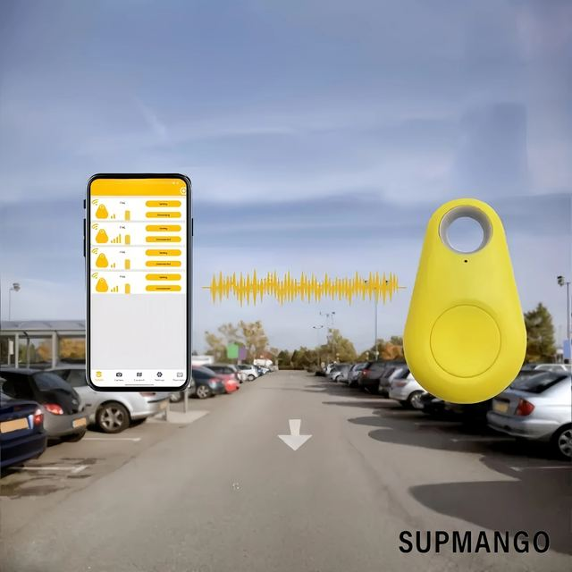
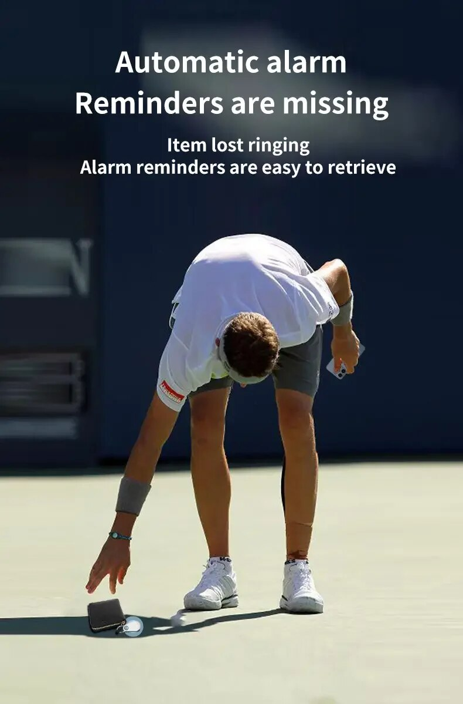
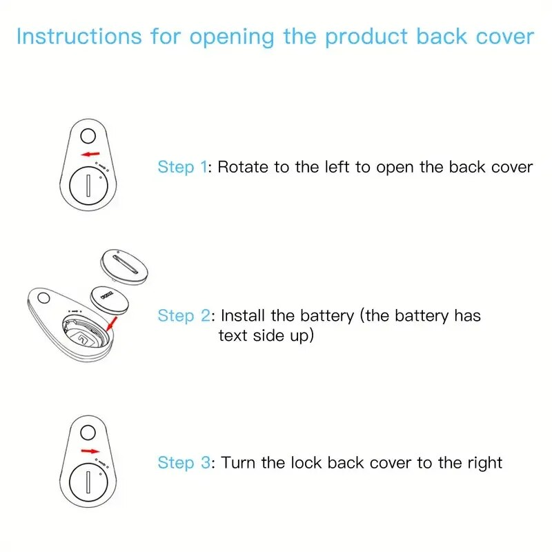
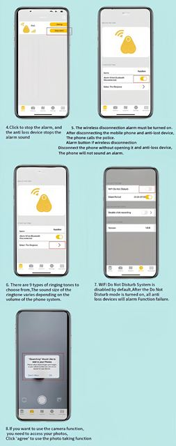

Material: ABS
Battery: Button battery CR2032
Product size: 52x31x11mm
Battery:220mah
APP:ISearching
1.Compact and Light Design: Low Energy Consumption Alarm.
2.Support: find Phone Function and Voice Recording Function.
Specifications:
【Key Finder with App】The key finder is connected to the phone via Bluetooth and ISearching .With An anti-lost sleeve to attach keys, wallet, remote, glasses, phones, dog collars or other things that are easy lost. The key finder locator will help you not waste time searching for stuff.
►【One Touch Find】The key finder that makes music helps you find misplaced items quickly; Click the "CALL" on the App to make your key finder ring and find anything quickly.
►【Location Record Locator】App has real time location map, and will record the last connected location to help you find it back. so you can open the map in the App to speculate approximate location of your missing items.
►[Compatibility and size:] It supports for iOS and Android phone.Suitable for Wallet, Car, Kids, Pets, Bags, Suitcase or other belongings.
Package Included:
1*Tracker
1*User manual
Package: *OPP
Note:
Support 4.0 and The effective Range is up to 15m. Due to the difference between different monitors, the picture may not reflect the actual color of the item.







